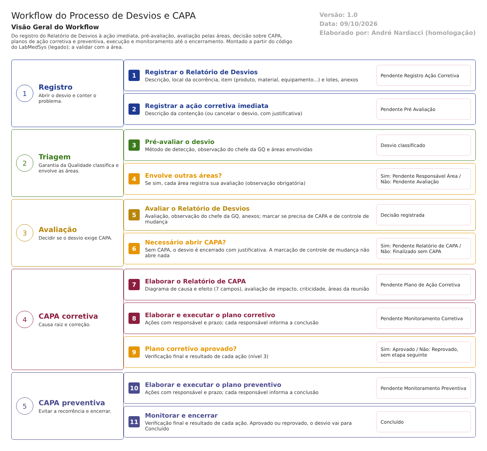

Objetivo
Este documento descreve o fluxo de desvios e CAPA (ações corretivas e preventivas) no LabMedSys. Vai do registro do Relatório de Desvios à ação corretiva imediata, à pré-avaliação pela Garantia da Qualidade, à avaliação pelas áreas envolvidas, à decisão sobre abrir CAPA, ao Relatório de CAPA com a causa raiz, aos planos de ação corretiva e preventiva, à execução e ao monitoramento até o encerramento.
Foi montado a partir do código do sistema legado. O que depende da prática da área está marcado como a validar. Os casos de teste estão no fim.
Escopo
- Registro, edição e cancelamento do Relatório de Desvios.
- Ação corretiva imediata (contenção).
- Pré-avaliação, avaliação das áreas e avaliação final do desvio.
- Relatório de CAPA, planos de ação corretiva e preventiva, execução e monitoramento.
- Relatórios de acompanhamento.
Fora do escopo: o controle de mudanças (fluxo próprio, a seguir), a ligação com o lote no Estoque, no Controle da Qualidade e na Produção (tratada no mapa do processo fabril) e os cadastros de usuários, áreas e grupos de perfil (Principal e Configuração da GQ).
Nomes das telas: como aparecem no menu ou no alto de cada tela. A referência ao código fica só nas regras, com o caminho relativo a 5.garantia_qualidade/app/. Para encurtar, Bloco2/ quer dizer HSolutions.GQ.UI/Areas/Bloco2/Controllers/, e Service/ quer dizer HSolutions.GQ.Domain/Service/.
Quem faz o quê (níveis de acesso): a GQ usa três níveis de "grupo de perfil", cadastrados na tela Grupo Perfil. Pelo código: o nível 1 só mexe no que criou; o nível 2 também mexe no que é da sua área; o nível 3 mexe em tudo e é o único que abre os planos de ação e o monitoramento. A validar: que pessoas da empresa estariam em cada nível (provavelmente nível 3 = Garantia da Qualidade).
Visão geral do processo

Qualquer área registra um Relatório de Desvios e, em seguida, a ação corretiva imediata que conteve o problema. A Garantia da Qualidade faz a pré-avaliação: diz como o desvio foi detectado e quais áreas precisam opinar. Cada área envolvida registra sua avaliação de área. Depois, a GQ faz a avaliação do relatório e decide se é preciso abrir CAPA.
Sem CAPA, o desvio termina como Finalizado sem Relatório CAPA, com justificativa. Com CAPA, a GQ preenche o Relatório de CAPA (diagrama de causa e efeito, impacto e criticidade) e o plano de ação corretiva. Os responsáveis executam as ações, e a GQ faz o monitoramento, aprovando ou reprovando o plano. Aprovado o corretivo, segue o plano de ação preventiva, com a mesma sequência. O monitoramento do preventivo leva o desvio a Concluído.
Situações do desvio, na ordem:
| # | Situação (como aparece na tela) | Quem tira o desvio dela | Tela |
|---|---|---|---|
| 1 | Pendente Registro Ação Corretiva | Quem registrou ou a área | Registro Ação Corretiva Imediata |
| 2 | Pendente Pré Avaliação | GQ | Pré Avaliação Relatório Desvios |
| 3 | Pendente Responsável Área | Cada área envolvida | Avaliação Área |
| 4 | Pendente Avaliação Relatório de Desvios | GQ | Avaliação Relatório Desvios |
| 5a | Finalizado sem Relatório CAPA | — (fim) | — |
| 5b | Pendente Relatório de CAPA | GQ | Relatório de CAPA |
| 6 | Pendente Plano Ação Corretiva | GQ (nível 3) | Plano de Ação Corretiva |
| 7 | Pendente Monitoramento do Plano Ação Corretiva | Responsáveis (execução) e GQ nível 3 (monitoramento) | Execução e Monitoramento do Plano de Ação Corretiva |
| 8a | Aprovado Plano Ação Corretiva | GQ (nível 3) | Plano de Ação Preventiva |
| 8b | Reprovado Plano Ação Corretiva | Ninguém (ver ponto de atenção 2) | — |
| 9 | Pendente Monitoramento do Plano Ação Preventiva | Responsáveis e GQ nível 3 | Execução e Monitoramento do Plano de Ação Preventiva |
| 10 | Concluído | — (fim) | — |
| — | Cancelado | — (fim), só a partir da situação 1 | Relatório de Desvios ou Registro Ação Corretiva Imediata |
Descrição funcional das etapas
"A numeração das regras de negócio é reiniciada em cada atividade, visando facilitar sua identificação e manutenção."
Registro do Relatório de Desvios
Regras de negócio
- RN001 – Obrigatórios: descrição e local da ocorrência (
Service/RelatorioNaoConformidadeValidator.cs:26e:32). O responsável e a data de criação também são exigidos, mas vêm preenchidos (:72e:78). - RN002 – O desvio é ligado a um item, de um destes tipos: processo, formulação, regulatórios, produto, projetos, equipamento, metodologia analítica, MP ou ME, sistema computadorizado, mudança de fornecedor, instalações, utilidades, material ou outros (
HSolutions.GQ.Domain/Enumeradores/TipoItem.cs). Produtos e lotes são buscados na Produção, materiais no "estoque" (na verdade também na API da Produção) e equipamentos no Principal. - RN003 – Os lotes escolhidos são copiados para a GQ como número e descrição (
HSolutions.GQ.Domain/Entities/Bloco2/ControleDesvios/ItemRegistroDesvio.cs:17). O desvio não muda nada no lote em outro módulo. - RN004 – Anexo é opcional; se houver, o arquivo e a descrição do anexo são obrigatórios (
RelatorioNaoConformidadeValidator.cs:58e:64). - RN005 – Ao salvar, o desvio recebe número sequencial por ano e vai para Pendente Registro Ação Corretiva (
Bloco2/RegistroNaoConformidadeController.cs:282). A inclusão grava histórico (:313). - RN006 – A data do relatório gravada é a que vem da tela (
RegistroNaoConformidadeController.cs:208,DateTime.Parse(model.DataRD)), e não a hora do servidor no momento de salvar. A confirmar no teste se o campo pode ser alterado. - RN007 – Edição só enquanto o desvio está em Pendente Registro Ação Corretiva, por quem criou, por nível 3, ou por nível 2 da mesma área de quem criou (
HSolutions.GQ.UI/Helpers/GerenciadorAcessoTelaRelatorioNaoConformidadeIndex.cs). A edição exige justificativa e grava histórico (RelatorioNaoConformidadeValidator.cs:40;RegistroNaoConformidadeController.cs:470). - RN008 – Cancelamento: mesmas condições da edição, com justificativa obrigatória (
RelatorioNaoConformidadeValidator.cs:49). O sistema guarda quem cancelou, quando e o motivo no próprio desvio, mas não grava na trilha de auditoria (RegistroNaoConformidadeController.cs:548, alteração sem histórico). Ver ponto de atenção 4.
Telas do sistema
| Módulo | Tela | Finalidade |
|---|---|---|
| Garantia da Qualidade | Relatório de Desvios | Registrar, editar, visualizar e cancelar |
Ação corretiva imediata
Regras de negócio
- RN001 – Obrigatória a descrição da ação imediata (
Service/AcaoCorretivaImediataRDValidator.cs:26). - RN002 – Mesmas regras de acesso do registro: só em Pendente Registro Ação Corretiva; nível 1 não edita o que não criou; nível 2 só da sua área (
HSolutions.GQ.UI/Helpers/GerenciadorAcessoTelaAcaoCorretivaImediataRDIndex.cs). - RN003 – Ao salvar, o desvio vai para Pendente Pré Avaliação (
Bloco2/AcaoCorretivaImediataRDController.cs:182), com histórico (:304). - RN004 – A data e hora da ação imediata vêm da tela (
AcaoCorretivaImediataRDController.cs:193), como na RN006 do registro. - RN005 – Esta tela também permite cancelar o desvio. Aqui o cancelamento grava histórico (
AcaoCorretivaImediataRDController.cs:379), ao contrário do cancelamento pela tela Relatório de Desvios.
Telas do sistema
| Módulo | Tela | Finalidade |
|---|---|---|
| Garantia da Qualidade | Registro Ação Corretiva Imediata | Registrar a contenção ou cancelar o desvio |
Pré-avaliação
Regras de negócio
- RN001 – Obrigatório o método de detecção: processo/produção, auditoria interna, inspeção sanitária, Controle da Qualidade, Garantia da Qualidade, SAC/Fármaco ou outros. Se for "outros", o campo de texto é obrigatório (
Service/PreAvaliacaoRNCValidator.cs:27e:35). - RN002 – Registra a observação do chefe da GQ (o código chama o campo de "ChefeDGQ"). O responsável é o usuário conectado.
- RN003 – Sem áreas envolvidas, o desvio vai direto para Pendente Avaliação Relatório de Desvios (
Bloco2/PreAvaliacaoRNCController.cs:226). Com áreas, vai para Pendente Responsável Área (:250). - RN004 – A data e hora da pré-avaliação vêm da tela (
PreAvaliacaoRNCController.cs:242). Na tela o campo aparece travado e preenchido com a hora em que a tela foi aberta. - RN005 – Nível 1 não faz pré-avaliação. Nível 2 só da sua área (
HSolutions.GQ.UI/Helpers/GerenciadorAcessoTelaPreAvaliacaoRNCIndex.cs). - RN006 – Não há classificação de risco nem de criticidade nesta etapa. A criticidade só aparece no Relatório de CAPA.
Telas do sistema
| Módulo | Tela | Finalidade |
|---|---|---|
| Garantia da Qualidade | Pré Avaliação Relatório Desvios | Método de detecção e áreas envolvidas |
Avaliação pelas áreas
Regras de negócio
- RN001 – Cada área envolvida registra uma avaliação, com observação obrigatória ("A Observação da Área é obrigatória.",
Bloco2/AvaliacaoAreaRDController.cs:353). A avaliação já nasce concluída (:264) e não pode ser refeita. - RN002 – Quando todas as áreas avaliaram, o desvio vai para Pendente Avaliação Relatório de Desvios (
AvaliacaoAreaRDController.cs:274-276). - RN003 – Na lista, o botão de avaliar só aparece para quem é da área (
AvaliacaoAreaRDController.cs:116). Ao salvar, o sistema não confere de novo se o usuário pertence à área avaliada: a área do usuário é buscada e não é usada (:249). A confirmar no teste (ponto de atenção 5). - RN004 – Nível 1 não avalia (
HSolutions.GQ.UI/Helpers/GerenciadorAcessoTelaAvaliacaoAreaRDIndex.cs).
Telas do sistema
| Módulo | Tela | Finalidade |
|---|---|---|
| Garantia da Qualidade | Avaliação Área | Parecer de cada área envolvida |
Avaliação do Relatório de Desvios e decisão sobre CAPA
Regras de negócio
- RN001 – Obrigatórias a avaliação e a observação do chefe do SDGQ (
Service/AvaliacaoRNCValidator.cs:41e:59). Anexo opcional, com arquivo e descrição se houver. - RN002 – A tela lista os desvios em Pendente Avaliação e em Pendente Responsável Área, mas só libera a edição em Pendente Avaliação Relatório de Desvios, ou seja, depois das áreas. O arquivo
GerenciadorAcessoTelaRelatorioCapaIndex.cscontém a classe da Avaliação (os nomes dos arquivos estão trocados com o do Relatório de CAPA, sem efeito no funcionamento). - RN003 – A trava "A finalização das avaliações das áreas são obrigatórias" (
AvaliacaoRNCValidator.cs:65) só barra avaliação de área pendente. Como a avaliação de área já nasce concluída, a trava, na prática, não barra nada. Quem protege a ordem é só a lista (RN002). - RN004 – Duas marcações: necessário abrir CAPA e necessário abrir controle de mudança (
Bloco2/AvaliacaoRNCController.cs:291e:293). - RN005 – Sem CAPA: o campo "Observação para abertura de CAPA" é obrigatório (
AvaliacaoRNCValidator.cs:52) e o desvio termina como Finalizado sem Relatório CAPA (AvaliacaoRNCController.cs:197). - RN006 – Com CAPA: o desvio vai para Pendente Relatório de CAPA (
AvaliacaoRNCController.cs:296). - RN007 – A marcação de controle de mudança não abre nenhuma solicitação de mudança. Fica só registrada no desvio.
Telas do sistema
| Módulo | Tela | Finalidade |
|---|---|---|
| Garantia da Qualidade | Avaliação Relatório Desvios | Parecer final e decisão sobre CAPA |
Relatório de CAPA
Regras de negócio
- RN001 – O diagrama de causa e efeito tem 7 campos de texto, e todos são obrigatórios ("O diagrama deve ser totalmente preenchido.",
Service/RelatorioCapaValidator.cs:37). Os campos ficam emHSolutions.GQ.Domain/Entities/Bloco2/ControleDesvios/RelatorioCapa.cs:28em diante. - RN002 – Registra a avaliação de impacto e a criticidade: crítico, maior ou menor (
RelatorioCapa.cs:36e:38). - RN003 – Pelo menos uma divisão ou seção precisa participar da reunião (
RelatorioCapaValidator.cs:43). A área escolhida precisa ter responsáveis cadastrados ("Essa área não possui responsáveis.",Bloco2/RelatorioCapaController.cs:284). - RN004 – Ao salvar, o desvio vai para Pendente Plano Ação Corretiva (
RelatorioCapaController.cs:220). - RN005 – Não há campo para justificar erro humano como causa (art. 340 da RDC).
Telas do sistema
| Módulo | Tela | Finalidade |
|---|---|---|
| Garantia da Qualidade | Relatório de CAPA | Causa raiz, impacto e criticidade; impressão |
Plano de ação corretiva, execução e monitoramento
Regras de negócio
- RN001 – Só nível 3 abre o plano de ação corretiva (
Bloco2/PlanoAcaoCorretivaRNCController.cs:129). - RN002 – Cada ação exige descrição, responsável e prazo (
Service/PlanoAcaoCorretivaValidator.cs:41a:75). O responsável é escolhido entre os responsáveis de uma área (PlanoAcaoCorretivaRNCController.cs:441). - RN003 – Ao salvar o plano, o desvio vai direto para Pendente Monitoramento do Plano Ação Corretiva (
PlanoAcaoCorretivaRNCController.cs:224). Não há aprovação do plano antes da execução. A única aprovação é a do monitoramento, no fim. - RN004 – Execução: cada responsável informa a conclusão da sua ação, com data de conclusão obrigatória e não futura (
Service/AvaliacaoPlanoAcaoCorretivaValidator.cs:28e:35). A ação fica concluída (Bloco2/AvaliacaoPlanoAcaoCorretivaRNCController.cs:266). Concluir as ações não muda a situação do desvio. - RN005 – Monitoramento: só nível 3 abre (
Bloco2/LiberacaoPlanoAcaoCorretivaRNCController.cs:122). Obrigatórios: observação de verificação final e um resultado por ação (número e observação) (Service/LiberacaoPlanoAcaoCorretivaValidator.cs:27a:48). A mensagem do último campo está errada: pede "Responsável na Ação Corretiva" quando falta a observação. - RN006 – O monitoramento não exige que todas as ações estejam concluídas. O validador não olha a situação das ações. A confirmar no teste.
- RN007 – Aprovado: o desvio vai para Aprovado Plano Ação Corretiva e segue para o plano preventivo. Reprovado: vai para Reprovado Plano Ação Corretiva (
LiberacaoPlanoAcaoCorretivaRNCController.cs:236-242), situação de onde nenhuma tela o tira (ponto de atenção 2). - RN008 – Não há verificação de eficácia depois de um prazo: o monitoramento avalia se as ações foram implementadas (ponto de atenção 3).
Telas do sistema
| Módulo | Tela | Finalidade |
|---|---|---|
| Garantia da Qualidade | Plano de Ação Corretiva | Definir ações, responsáveis e prazos |
| Garantia da Qualidade | Execução do Plano de Ação Corretiva | Cada responsável conclui sua ação |
| Garantia da Qualidade | Monitoramento do Plano de Ação Corretiva | Verificação final, aprovar ou reprovar |
Plano de ação preventiva, execução, monitoramento e encerramento
Regras de negócio
- RN001 – O plano preventivo só pode ser feito depois de o corretivo ser aprovado (a tela lista apenas desvios em Aprovado Plano Ação Corretiva). Só nível 3 abre (
Bloco2/PlanoAcaoPreventivaRNCController.cs:100). - RN002 – Mesmas exigências do corretivo para cada ação: descrição, responsável e prazo (
Service/PlanoAcaoPreventivaValidator.cs). Ao salvar, o desvio vai para Pendente Monitoramento do Plano Ação Preventiva (PlanoAcaoPreventivaRNCController.cs:181). - RN003 – Execução igual à corretiva: data de conclusão obrigatória e não futura (
Service/AvaliacaoPlanoAcaoPreventivaValidator.cs:27e:34). - RN004 – Monitoramento: só nível 3. Obrigatórios: verificação final, observação do monitoramento da implementação e um resultado por ação (
Service/LiberacaoPlanoAcaoPreventivaValidator.cs:27a:55). - RN005 – Aprovado ou reprovado, o desvio vai para Concluído (
Bloco2/LiberacaoPlanoAcaoPreventivaRNCController.cs:241-247). Ponto de atenção 1. - RN006 – Pelo código, todo desvio com CAPA precisa de plano preventivo para ser encerrado: não há caminho de Aprovado Plano Ação Corretiva para Concluído sem ele. A validar com a área se isso corresponde à prática.
Telas do sistema
| Módulo | Tela | Finalidade |
|---|---|---|
| Garantia da Qualidade | Plano de Ação Preventiva | Definir ações preventivas |
| Garantia da Qualidade | Execução Plano de Ação Preventiva | Cada responsável conclui sua ação |
| Garantia da Qualidade | Monitoramento do Plano de Ação Preventiva | Verificação final e encerramento |
Acompanhamento
Regras de negócio
- RN001 – Acompanhamento RD imprime os desvios de um período, por situação (
Bloco2/AcompanhamentoRNCController.cs). Controle de Emissão de RNC imprime os relatórios emitidos. Nenhum dos dois agrupa por causa, área ou produto, o que seria preciso para a análise de tendência (art. 342 da RDC).
Telas do sistema
| Módulo | Tela | Finalidade |
|---|---|---|
| Garantia da Qualidade | Acompanhamento RD | Relatório por período e situação |
| Garantia da Qualidade | Controle de Emissão de RNC | Relatório de emissão |
Pontos de atenção
1. Plano preventivo reprovado encerra o desvio como "Concluído". O monitoramento do plano preventivo leva o desvio a Concluído tanto na aprovação quanto na reprovação (LiberacaoPlanoAcaoPreventivaRNCController.cs:241-247). Um desvio com plano reprovado fica igual, na lista, a um desvio resolvido. Contraria a exigência de que a CAPA seja implementada e sua eficácia avaliada (RDC 658/2022, art. 8º, § 4º, e art. 341).
2. Plano corretivo reprovado não tem saída. A reprovação no monitoramento leva o desvio a "Reprovado Plano Ação Corretiva". Nenhuma tela lista essa situação para refazer o plano: ela só aparece na própria tela de monitoramento. O desvio fica parado para sempre, sem chegar ao plano preventivo nem a Concluído.
3. A eficácia da CAPA não é verificada. O monitoramento confere se as ações foram implementadas, não se resolveram o problema. Também não exige que todas as ações estejam concluídas (RN006 do plano corretivo). Não há prazo para uma verificação de eficácia posterior.
4. Trilha de auditoria incompleta. O cancelamento pela tela Relatório de Desvios não grava histórico, enquanto o cancelamento pela tela de Ação Corretiva Imediata grava. As datas do registro, da ação imediata e da pré-avaliação vêm da tela, e não do relógio do servidor no momento de salvar (RDC 658/2022, art. 125; Guia 33, integridade dos dados).
6. O desvio não chega ao lote. Os lotes são copiados como texto e nada é bloqueado ou sinalizado no Estoque, no Controle da Qualidade ou na Produção. A marcação "necessário abrir controle de mudança" também não abre nada. A investigação não se estende a outros lotes (RDC 658/2022, arts. 8º, IX e XV, e 335).
7. Sem aprovação do plano antes da execução e sem separação de funções. O plano de ação vai direto para execução. A mesma pessoa de nível 3 pode escrever o plano e aprová-lo no monitoramento. Nenhuma aprovação pede senha (assinatura eletrônica).
Casos de teste
Dados: usuários de teste em três grupos de perfil, TESTE NIVEL 1, TESTE NIVEL 2 e TESTE NIVEL 3, em duas áreas diferentes. Criar os grupos na tela Grupo Perfil se ainda não existirem. Também um lote TESTE já existente no Estoque (ver a lista em 3.estoque/execucao/) e um equipamento TESTE do Principal. Todos os desvios com descrição começando por TESTE.
| Caso | O que fazer | Resultado esperado |
|---|---|---|
| CT-GQ-001 | Relatório de Desvios sem descrição e sem local | Recusa: descrição e local obrigatórios |
| CT-GQ-002 | Registrar desvio TESTE com item produto e o lote TESTE |
Número sequencial do ano; situação Pendente Registro Ação Corretiva |
| CT-GQ-003 | Tentar alterar a data do relatório antes de salvar (campo da tela) | Pela norma, a data deve ser a do servidor. Registrar se a data alterada for gravada |
| CT-GQ-004 | Editar o desvio sem justificativa e depois com justificativa; consultar o histórico | Recusa sem justificativa; com ela, o histórico mostra valor antigo e novo |
| CT-GQ-005 | Com o TESTE NIVEL 1 de outra área, tentar editar o desvio de outro usuário |
Sem botão de editar |
| CT-GQ-006 | Cancelar um desvio pela tela Relatório de Desvios, com justificativa; consultar o histórico | Cancelado. Registrar se o cancelamento não aparecer no histórico (ponto 4) |
| CT-GQ-007 | Cancelar outro desvio pela tela Registro Ação Corretiva Imediata; consultar o histórico | Cancelado e presente no histórico (comparar com o CT-GQ-006) |
| CT-GQ-008 | Registrar a ação imediata sem descrição e depois com descrição | Recusa; depois Pendente Pré Avaliação |
| CT-GQ-009 | Pré-avaliação com método "Outros" sem texto | Recusa |
| CT-GQ-010 | Pré-avaliação com duas áreas envolvidas | Pendente Responsável Área |
| CT-GQ-011 | Antes de as áreas avaliarem, abrir a Avaliação Relatório Desvios | O desvio aparece na lista, mas sem botão de avaliar |
| CT-GQ-012 | Avaliação Área sem observação; depois só a primeira área avalia | Recusa; depois o desvio continua em Pendente Responsável Área |
| CT-GQ-013 | A segunda área avalia | Pendente Avaliação Relatório de Desvios |
| CT-GQ-014 | Com o desvio aberto, liberar ou usar o lote TESTE no CQ, no Estoque ou na Produção | Pela norma, deveria haver bloqueio ou aviso. Registrar com evidência se o lote seguir normalmente (ponto 6) |
| CT-GQ-015 | Avaliar sem CAPA, sem preencher a observação de abertura de CAPA | Recusa; preenchida, o desvio fica Finalizado sem Relatório CAPA |
| CT-GQ-016 | Em outro desvio, avaliar marcando CAPA e controle de mudança | Pendente Relatório de CAPA. Conferir que nenhuma solicitação de mudança foi aberta |
| CT-GQ-017 | Relatório de CAPA com o diagrama incompleto; depois completo, com criticidade "Crítico" | Recusa; depois Pendente Plano Ação Corretiva; impressão do CAPA |
| CT-GQ-018 | Com o TESTE NIVEL 2, abrir o Plano de Ação Corretiva |
Volta para a lista (só nível 3) |
| CT-GQ-019 | Plano corretivo com duas ações (responsáveis de áreas diferentes) | Desvio vai direto para Pendente Monitoramento, sem aprovação do plano |
| CT-GQ-020 | Executar só uma das duas ações, com data de conclusão futura e depois com a de hoje | Recusa a data futura; aceita a de hoje |
| CT-GQ-021 | Monitoramento com uma ação ainda não concluída, aprovando o plano | Pela norma, deveria exigir todas concluídas. Registrar se aprovar |
| CT-GQ-022 | Em outro desvio, reprovar o plano corretivo e procurar o desvio nas telas de plano | Registrar se o desvio ficar sem tela para seguir (ponto 2) |
| CT-GQ-023 | Plano preventivo, execução e monitoramento reprovando | Registrar se o desvio for para Concluído (ponto 1) |
| CT-GQ-024 | Mesmo usuário nível 3 escreve e aprova o plano preventivo de outro desvio | Pela norma, separação de funções. Registrar se o sistema aceitar |
| CT-GQ-025 | Acompanhamento RD e Controle de Emissão de RNC do período dos testes | Relatórios com os desvios TESTE e suas situações |
Prioridade (testes por risco): CT-GQ-014, 006, 022, 023, 021, 003 e 026 primeiro. Eles tocam lote, trilha de auditoria, CAPA e acesso.